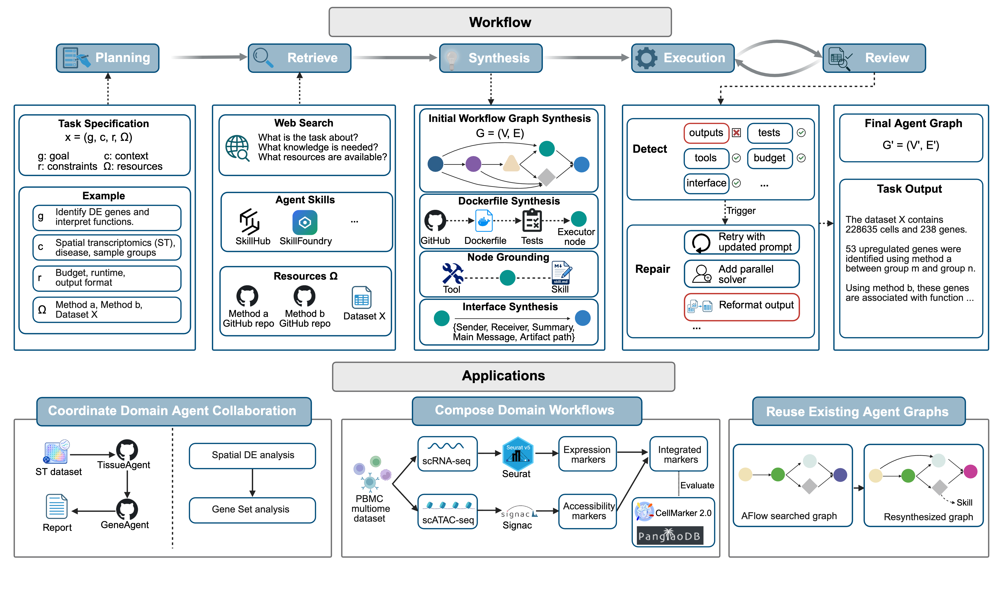
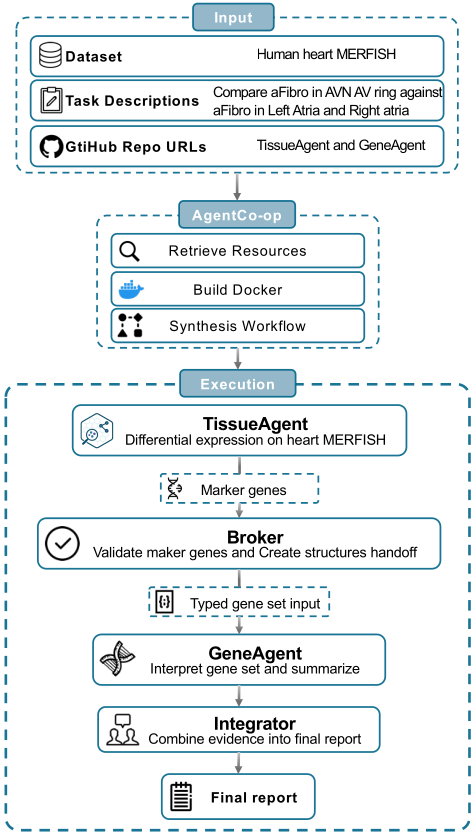
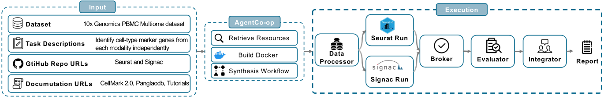

Designing multi-agent workflows is especially difficult in open-ended scientific settings where tasks lack curated training sets, reliable scalar evaluation metrics, and standardized interfaces between existing tools and agents.
We propose AgentCo-Op, a retrieval-based synthesis framework that composes reusable skills, tools, and external agents into executable workflows through typed artifact handoffs, then applies bounded self-guided local repair to implicated components when execution evidence indicates failure. In two open-world genomics case studies, AgentCo-Op composes independently developed scientific agents and external tool repositories into auditable workflows without redesigning them or running global topology search.
It coordinates specialized agents for spatial transcriptomics and gene-set interpretation to enable collaborative discovery from spatial transcriptomics data, and builds a parallel workflow for cross-modality marker analysis on single-cell multiome data. AgentCo-Op can also import a searched workflow as a structural prior and improve it by grounding nodes with retrieved components and applying local repair, showing that synthesis and search are complementary. On six coding, math, and question-answering benchmarks, AgentCo-Op achieves the best result on four benchmarks and the best average score under a unified backbone setting, while consistently reducing per-task cost relative to multi-agent baselines.

AgentCo-Op reframes automated multi-agent workflow design as retrieval-based synthesis: rather than searching over candidate topologies against a scalar reward, it composes reusable components into a task-specific workflow, coordinates them through typed artifact handoffs, and repairs implicated components from execution evidence. The pipeline runs in five stages.
Parse the typed task specification x = (g, c, r,
Ω)
— goal, context, resources, and constraints — and formulate a
retrieval plan that identifies the artifacts and roles needed
to solve the task.
Retrieve task-relevant artifacts from curated libraries and user-provided repositories: related materials informing workflow topology, agent skills encoding procedural knowledge, tools exposing callable operations, and GitHub repository metadata.
Construct an executable workflow graph G = (V,
E):
build the initial topology, wrap external repos/methods in
Docker containers or executors, ground each node with
retrieved
skills and tools, and align inputs/outputs through
standardized
typed message and artifact schemas.
Run the synthesized workflow while a reviewer continuously monitors execution evidence — logs, intermediate outputs, validation signals, tool errors, interface checks, and cost signals.
On failure or uncertainty, consult a small set of repair
policies and revise only the implicated nodes,
attached skills/tools, or communication edges — producing a
patched graph G' = (V', E') rather than
restarting
the entire synthesis pipeline.
We evaluate AgentCo-Op in two complementary regimes: three open-world scientific workflow composition tasks that motivate the synthesis-first design, and six standard QA, math, and code benchmarks under a unified matched-backbone setting (GPT-4o-mini).
On a developing human heart MERFISH dataset, AgentCo-Op is asked whether aFibro cells in the AVN / AV-ring cellular community exhibit a distinct transcriptional program relative to aFibro cells in the left and right atria. From only a task description and the GitHub URLs of TissueAgent (spatial transcriptomics) and GeneAgent (gene-set interpretation), AgentCo-Op profiles both repositories, builds isolated Docker containers, registers each as an external workflow node, and synthesizes a broker-mediated handoff workflow. The synthesized pipeline identifies 576 target aFibro cells against 5,685 controls, recovers 53 upregulated markers, and the downstream GeneAgent interprets them as an AV-canal- and node-associated fibroblast program — concluding that AVN / AV-ring aFibro cells represent a developmentally specialized, ECM-rich, conduction-niche-associated state.

On the 10x PBMC multiome dataset, AgentCo-Op composes Seurat (scRNA-seq) and Signac (scATAC-seq) into a parallel cross-modality marker-discovery workflow with an explicit join step. Markers are evaluated against CellMarker 2.0 and PanglaoDB: the intersection of modalities yields jointly supported markers (evaluated for precision), and the union captures all recovered markers (evaluated for recall). Combining the two modalities improves both macro precision and recall over either modality alone across both reference databases.

| Database | Metric | RNA | ATAC | Combined |
|---|---|---|---|---|
| CellMarker 2.0 | Precision | 0.195 | 0.110 | 0.303 |
| Recall | 0.102 | 0.061 | 0.124 | |
| PanglaoDB | Precision | 0.231 | 0.131 | 0.333 |
| Recall | 0.097 | 0.054 | 0.117 |
Table 1. Macro precision (on the intersection) and recall (on the union) of cross-modality marker integration on the PBMC multiome dataset. The Combined column is the cross-modality result.
AgentCo-Op imports the multi-agent graph produced by a trained AFlow search on MBPP and treats it as a structural prior in Ω. AgentCo-Op then resynthesizes the agent graph, grounds its nodes with retrieved skills and tools, and applies bounded local repair during execution. The hybrid AFlow + AgentCo-Op outperforms both AFlow alone and AgentCo-Op built from scratch — showing that synthesis and search are complementary.
| Strategy | MBPP pass@1 |
|---|---|
| AFlow | 78.2 |
| AgentCo-Op (from scratch) | 87.1 |
| AFlow + AgentCo-Op | 87.5 |
Table 2. MBPP performance of different agentic workflow design strategies. Initializing AgentCo-Op from an AFlow-searched graph improves performance compared with initializing it from scratch.
Across six benchmarks spanning QA (HotpotQA, DROP), code generation (HumanEval, MBPP) and math reasoning (GSM8K, MATH), AgentCo-Op achieves the best result on 4 / 6 benchmarks and the best average score under matched-backbone conditions — without any workflow search or training stage. AFlow* denotes results reported in the original AFlow paper (mixed backbones); AFlow (GPT-4o-mini) is our matched-backbone rerun.
| Method | Benchmarks | Avg. | |||||
|---|---|---|---|---|---|---|---|
| HotpotQA | DROP | HumanEval | MBPP | GSM8K | MATH | ||
| IO (GPT-4o-mini) | 68.1 | 68.3 | 87.0 | 71.8 | 92.7 | 48.6 | 72.8 |
| CoT | 67.9 | 78.5 | 88.6 | 71.8 | 92.4 | 48.8 | 74.7 |
| CoT-SC (5-shot) | 68.9 | 78.8 | 91.6 | 73.6 | 92.7 | 50.4 | 76.0 |
| MedPrompt | 68.3 | 78.0 | 91.6 | 73.6 | 90.0 | 50.0 | 75.3 |
| MultiPersona | 69.2 | 74.4 | 89.3 | 73.6 | 92.8 | 50.8 | 75.0 |
| Self-Refine | 60.8 | 70.2 | 87.8 | 69.8 | 89.6 | 46.1 | 70.7 |
| ADAS | 64.5 | 76.6 | 82.4 | 53.4 | 90.8 | 35.4 | 67.2 |
| AFlow* | 73.5 | 80.6 | 94.7 | 83.4 | 93.5 | 56.2 | 80.3 |
| LLM-Debate | 71.8 | 81.4 | 91.4 | 70.7 | 92.4 | 50.0 | 76.3 |
| ReConcile | 73.8 | 82.1 | 89.3 | 70.3 | 93.7 | 44.1 | 75.6 |
| AFlow (GPT-4o-mini) | 71.4 | 68.9 | 89.3 | 78.2 | 86.8 | 53.1 | 74.3 |
| AgentCo-Op (GPT-4o-mini) | 76.5 | 77.2 | 90.2 | 87.1 | 94.4 | 58.2 | 80.6 |
Table 3. Performance across six benchmarks using GPT-4o-mini as the backbone. Bold indicates the best score.
AgentCo-Op is substantially more efficient than discussion-based multi-agent baselines. It separates one-time workflow synthesis from bounded instance-level repair, avoiding both the training-time search cost of AFlow and the per-instance round-trip cost of LLM-Debate / ReConcile. Test-time cost is lower than ReConcile on all six benchmarks and lower than LLM-Debate on five of six.
| Dataset | Method | Score | Train Cost | Test Cost | Total |
|---|---|---|---|---|---|
| HotpotQA | LLM-Debate | 71.8 | — | $1.5200 | $1.5200 |
| ReConcile | 73.8 | — | $3.7600 | $3.7600 | |
| AFlow | 20.0 | $4.6104 | $1.3398 | $5.9502 | |
| AgentCo-Op | 76.5 | — | $0.4284 | $0.4284 | |
| DROP | LLM-Debate | 81.4 | — | $0.7200 | $0.7200 |
| ReConcile | 82.1 | — | $1.6800 | $1.6800 | |
| AFlow | 68.9 | $1.6798 | $0.3235 | $2.0033 | |
| AgentCo-Op | 77.2 | — | $0.3853 | $0.3853 | |
| HumanEval | LLM-Debate | 91.4 | — | $0.1572 | $0.1572 |
| ReConcile | 89.3 | — | $0.4061 | $0.4061 | |
| AFlow | 89.3 | $0.2258 | $0.0371 | $0.2629 | |
| AgentCo-Op | 90.2 | — | $0.1062 | $0.1062 | |
| MBPP | LLM-Debate | 70.7 | — | $0.1705 | $0.1705 |
| ReConcile | 70.3 | — | $0.7502 | $0.7502 | |
| AFlow | 72.4 | $0.3475 | $0.1152 | $0.4627 | |
| AgentCo-Op | 87.1 | — | $0.1791 | $0.1791 | |
| GSM8K | LLM-Debate | 92.4 | — | $1.6880 | $1.6880 |
| ReConcile | 93.7 | — | $1.8990 | $1.8990 | |
| AFlow | 86.8 | $0.0469 | $0.2000 | $0.2469 | |
| AgentCo-Op | 94.4 | — | $0.2537 | $0.2537 | |
| MATH | LLM-Debate | 50.0 | — | $1.7982 | $1.7982 |
| ReConcile | 44.1 | — | $1.6038 | $1.6038 | |
| AFlow | 53.1 | $0.0781 | $0.2691 | $0.3472 | |
| AgentCo-Op | 58.2 | — | $0.3670 | $0.3670 |
Table 4. Per-dataset performance and aggregate cost. A dash in Train Cost indicates that the method requires no workflow search or training stage. Bold = best score per dataset.
@misc{shen2026agentcoop,
title={AgentCo-Op: Retrieval-Based Synthesis of Interoperable Multi-Agent Workflows},
author={Shen, Shuaike and Cheng, Wenduo and Wang, Shike and Ma, Mingqian and Ma, Jian},
year={2026},
eprint={arXiv:TBD},
note={Preprint. Under review at NeurIPS 2026.},
url={https://github.com/Eurekashen/AgentCo-Op}
}